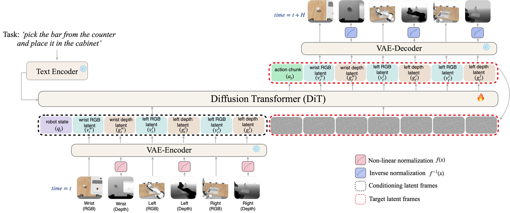
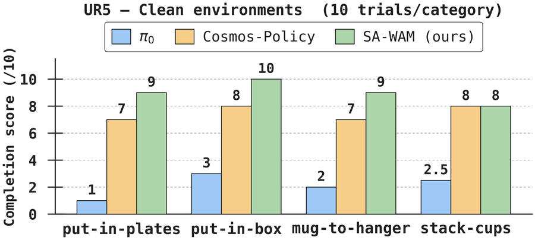
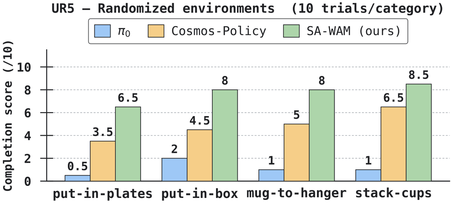
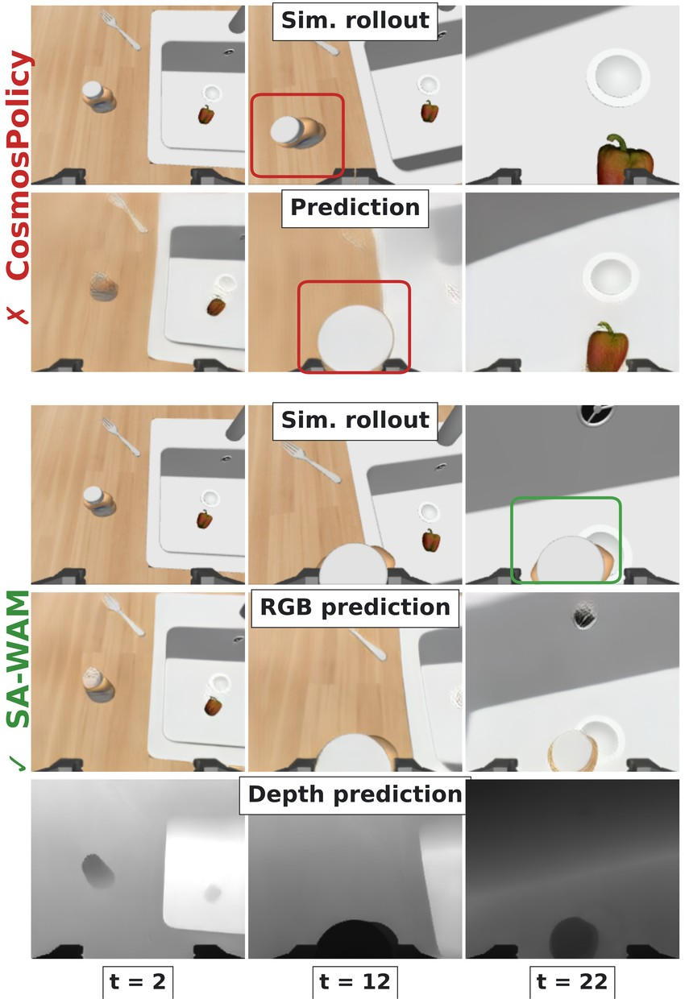
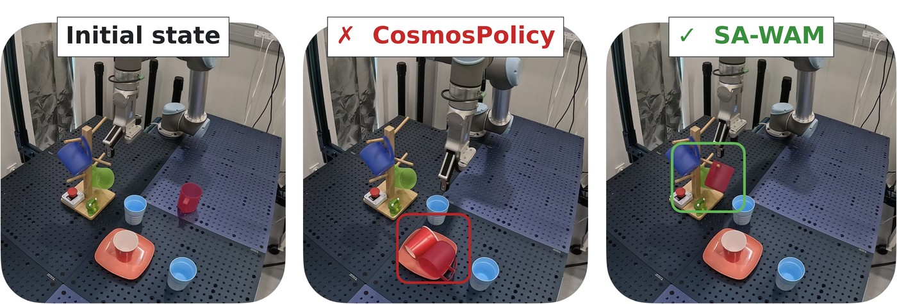
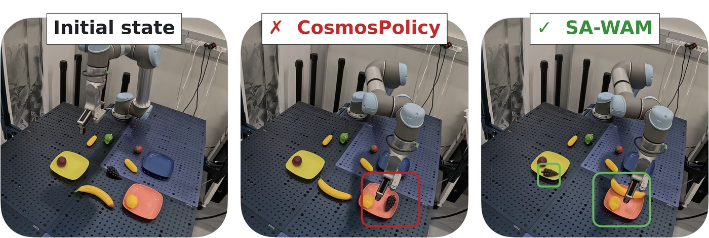

Abstract
World Action Models (WAMs) leverage the capabilities of large-scale pretrained video diffusion models to jointly predict future observations and actions, inheriting rich visual and physical priors from internet-scale video. This has made them a promising paradigm for robot policy learning, yet the prevailing models operate exclusively on RGB observations and do not leverage 3D information. To bridge this gap, we introduce a Spatially Aware World Action Model (SA-WAM), which repurposes a pretrained video model for joint action, RGB and depth prediction, enabling 3D-aware world modeling and action prediction within a single diffusion backbone. We use a nonlinear encoding that maps the unbounded depth signal into the bounded input domain expected by the frozen VAE tokenizer. This allows us to reuse the encoder without 3D-specific fine-tuning, incorporating geometric information without sacrificing the pretrained priors. SA-WAM achieves state-of-the-art results on the RoboCasa and LIBERO-Plus benchmarks, while simultaneously improving future-state predictions. Furthermore, SA-WAM outperforms strong baselines in real world evaluation using a UR5 robotic arm, with strong gains in randomized environments. We analyze the correlation between world model prediction quality and rollout success, providing insights into WAM performance and avenues for its improvement.
Method

The frozen video tokenizer expects a bounded input, while metric depth is unbounded — so the choice of normalization decides how much geometric contrast survives encoding. We compare linear, inverse and log-scale normalization and retain the log-scale mapping, which allocates greater resolution to the near field where manipulation precision matters while keeping usable precision at range. It reaches the lowest overall reconstruction error (0.63 % AbsRel) and the highest policy success rate, improving over linear normalization by 5.2 points.
Results
RoboCasa
Category-wise success rate (%) on the 24 RoboCasa tasks. SA-WAM obtains the highest overall success rate while training on 50 demonstrations per task — 6–20× fewer than most baselines.
| Method | Train demos / task | PnP | Open/Close | Turn/Toggle | Coffee | Avg. |
|---|---|---|---|---|---|---|
| π0 | 300 | – | – | – | – | 62.5 |
| VideoPolicy | 300 | – | – | – | – | 66.0 |
| UWM | 1000 | 35.6 | 82.0 | – | – | 60.8 |
| FLARE | 1000 | – | – | – | – | 71.3 |
| GR00T-N1.5 | 300 | 53.8 | 85.7 | 61.7 | 54.0 | 64.1 |
| GR00T-N1.5 + HAMLET | 300 | 48.5 | 87.7 | 69.7 | 64.0 | 66.4 |
| GR00T-N1.6-ft + World2Act | 300 | – | – | – | – | 72.6 |
| Cosmos-Policy | 50 | 51.8 | 91.1 | 66.3 | 61.6 | 67.1 |
| SA-WAM (ours) | 50 | 68.5 | 92.6 | 77.5 | 64.7 | 76.6 |
LIBERO-Plus
Weighted-average success rate (%) on LIBERO-Plus under zero-shot transfer — trained only on the original LIBERO demonstrations, with no adaptation to the seven perturbation axes.
| Method | Avg. SR (%) |
|---|---|
| π0 | 53.6 |
| π0-FAST | 61.6 |
| OpenVLA-OFT | 69.6 |
| RIPT-VLA | 68.4 |
| π0.5 | 84.6 |
| HoloBrain-0-GD | 74.0 |
| ABot-M0 | 80.5 |
| Fast-WAM | 50.0 |
| Cosmos-Policy | 81.4 |
| SA-WAM (ours) | 86.6 |
SA-WAM also reaches 98.4 % average success on standard LIBERO, on par with the strongest policies on this largely saturated benchmark.
Real-world UR5


Real-world UR5 results. Task-completion scores over 10 trials per category for π0, Cosmos-Policy and SA-WAM. SA-WAM reaches an aggregate completion score of 90.0 % in the clean setting against 75.0 % for Cosmos-Policy, and retains 77.5 % under randomization where Cosmos-Policy drops to 48.8 % — consistent with depth providing a complementary spatial cue in the presence of visually confusing distractors.
Qualitative results
RoboCasa

Real-world UR5, randomized environments
Two manipulation examples under domain randomization where SA-WAM reaches task completion while Cosmos-Policy fails to disambiguate colour distractors. Rollout errors are highlighted with red squares, task completion with green squares.

take the pink mug and put it on the middle part of the hanger
put the grapes in the yellow plate, then put the banana in the pink plateBibTeX
@article{lopetegui2026sawam,
title = {Spatially Aware World Action Model via Geometric Latent Diffusion},
author = {Lopetegui Gonzalez, Javier Alejandro and Pacaud, Paul and Schmid, Cordelia},
year = {2026}
}Acknowledgement
This work was granted access to HPC resources of IDRIS under the allocation AD011017145 made by GENCI. It was funded in part by the French government under management of Agence Nationale de la Recherche as part of the “France 2030” program, reference ANR-23-IACL-0008 (PR[AI]RIE-PSAI projet) and the ANR project VideoPredict (ANR-21-FAI1-0002-01). Cordelia Schmid would like to acknowledge the support by the Körber European Science Prize. The authors thank Peteris Kulits, Federica Spinola and Zeeshan Khan for their valuable contributions to this project.